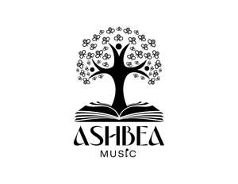

Trade Mark Journal No.2025/013 28 March 2025
UK00004141886 29 December 2024 (9,16,41)

- Class 9
- Music software; Mobile apps; Music recordings; Downloadable music files; Downloadable digital music; Downloadable music sound recordings; Digital music downloadable provided from MP3 internet websites; Downloadable software in the nature of a mobile application for playing games; Downloadable software applications for mobile phones; Downloadable interactive entertainment software for playing video games; Smartphone software applications, downloadable; Electronic game software for mobile phones; Electronic sheet music, downloadable; Interactive entertainment computer software for video games; Downloadable interactive entertainment software for playing computer games; Software programs for video games; Computer games entertainment software; Interactive multimedia software for playing games; Digital music downloadable provided from MP3 internet web sites; Downloadable digital music provided from MP3 Internet web sites; Digital music downloadable provided from the internet; Video games programs [computer software]; Software applications for use with mobile devices; Software applications for mobile devices; Software and applications for mobile devices; Video games software; Digital music [downloadable] provided from mp3 web sites on the internet; Musical video recordings; Digital music downloadable provided from a computer database or the internet; Downloadable applications for use with mobile devices; Downloadable applications for mobile devices; Application software for mobile phones; Software for mobile phones; Educational software; Educational computer software; Education software; Children's educational software; Computer software for education; Educational computer applications; Interactive software; Computer software for entertainment; Interactive computer software; Training software; Computer software concerned with children's education; Computer software applications, downloadable; Downloadable computer software; Computer games programmes [software]; Student software; Downloadable educational media; Computer software; Entertainment software; Computer games programs [software].
- Class 16
- Music books; Sheet music; Music scores; Music sheets; Printed music; Music in sheet form; Printed music books; Printed sheet music; Printed books in the field of music education.
- Class 41
- Music recording; Music education; Production of music; Music production; Teaching of music; Music publishing; Publishing of music; Tuition in music; Production of sound and music recordings; Instruction in music; Music instruction; Publication of music; Music composition services; Composition of music for others; Music composition for others; Music mixing services; Tuition in music appreciation; Music production services; Music group services; Publication of sheet music; Music transcription for others; Publication of music books; Music transcription services; Production of musical recordings.
Ashbea Music Limited